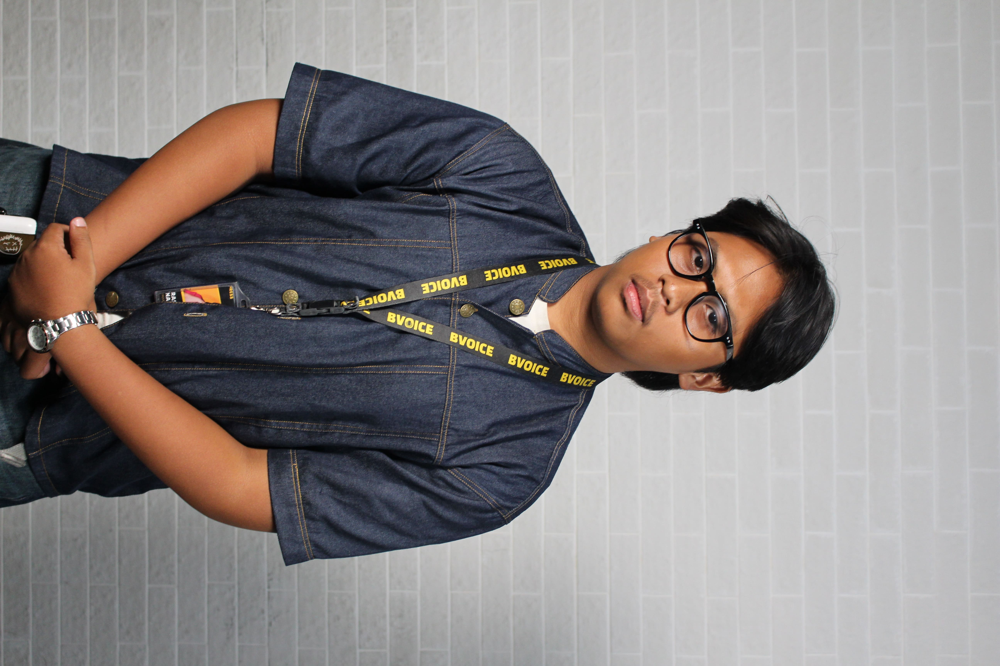
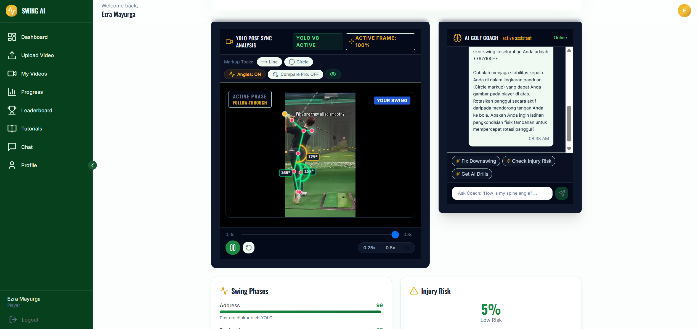
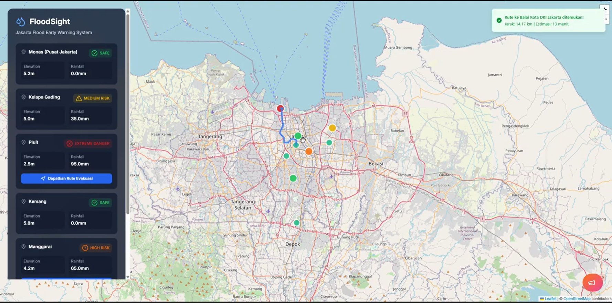
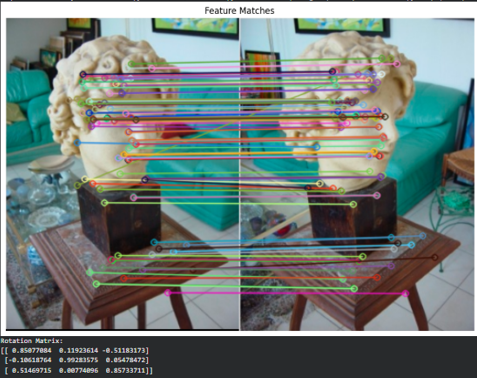

EZRA MAYURGA
Computer Science Student // BINUS University
Computer Science student at BINUS University specializing in Intelligence Systems. Highly adaptive development background working with deep structural learning models, computational vision engines, and scalable data pipeline optimization scripts. Currently deployed as the elected President of BVoice Radio to sync enterprise-wide communication layers, sponsorship frameworks, and off-air brand recognition plans.
// SKILL INVENTORY
Try clicking the storage module box below !
CORES
OPEN DRAWER
// PROJECT RELEASES

Golf Helper Identifier
A web-based golf swing analysis system powered by YOLOv8-Pose that connects players and coaches to a digital coaching ecosystem. Eliminates heavy human coaching fees and allows native, zero-installation setup.

FloodSight Jakarta
An AI early response platform monitoring flood status across Jakarta's critical sectors. Pairs live meteo feeds and elevation vectors with smart rescue paths at $0 structural maintenance fees.

Gambling Content Detection Engine
A specialized text classification network designed to automatically isolate, flag, and filter out high-volume gambling spam and illegal promotional materials from YouTube comments.

Optical Edge Detection Pipeline
A programmatic computer vision processing array engineered to process static image arrays, apply matrix filters, and extract clean architectural geometries and structural outlines.
// DEPLOYMENTS EXPERIENCES
BackEnd Developer — BVoice Radio Jakarta
Responsible for designing, building, and maintaining the server-side logic, data management workflows, and API integrations that kept the university's online radio and media platform running smoothly:
- API Design: Developed secure RESTful APIs to power web platforms and internal station tools
- Performance: Optimized audio streaming backend services to ensure low-latency playback
- Database Management: Structured databases for efficient management for data user
- Collaboration: Partnered with frontend teams to rapidly deploy new platform features
Producer & Announcer — BVoice Radio Jakarta
Deployed as primary on-air brand asset and vocal engineering transmission point under the operational standard "Your Voice and Your Sound":
- Executing high-retention live radio streaming arrays, managing creative youth content segments, real-time community entertainment logs, and news deliveries.
- Synthesizing real-time interactive audience feeds to maximize station engagement metrics.
President — BVoice Radio Jakarta
Commanded the overall organizational vision, multi-tier budget pools, and large-scale execution frameworks for a student-run online media network associated with BINUS University:
- Managed full lifecycle pipeline parameters for off-air campaigns from initial conceptual maps, financial budgeting, and fundraising arrays down to final deployment.
- Negotiated commercial investment packages with external brand partners, corporate sponsors, and media syndicates to discover alternative revenue pipelines.
- Oversaw physical production nodes, tracking venue architecture logic, technical sound/lighting arrays, zoning clearances, and multi-division team alignments.
- Executed runtime mitigation vectors for data/technical bottlenecks, ensuring all milestones tracking perfectly along the targeted roadmap schedule.
- Engineered structural leadership succession maps to secure continuous, sustainable organizational handovers for subsequent terms.
// ACHIEVEMENTS
Microsoft Elevate AI Certification — Azure AI Fundamentals
Held by Microsoft x BINUS University (GreatNusa Platform):
- Completed 15 hours of specialized technical validation tracking baseline AI framework implementations.
- Explored cloud infrastructure deployment paradigms and fundamental Azure engine capabilities.
Generative AI Core Systems Engineering Verification
Held by LinkedIn Learning Hub Architecture Platform:
- Validated proficiency across modern generative models, structural weights, prompting blocks, and real-world enterprise AI utility loops.
National Gold Medalist // National Science Olympiad 2.0
National level mathematics competitive event:
- Secured the top-tier National Gold Medal placement for advanced numeric analysis, complex logical induction matrix capabilities, and discrete computational mathematics.
FISIKA DASAR 2 // Universitas Indonesia Pre-U
Academic acceleration validation issued directly by UI Faculty Core:
- Successfully completed the Pre-University academic tier targeting foundational physical system mechanics (Fisika Dasar 2) with A- scored
Bronze Medalist // National Olympiad Tiers
held by UNIVERSITY.ID National Analytics Grid:
- National Physics Arena: Clinched Bronze Medal positioning while ranking #13 and #32 across provincial-level high-compute data pipelines.
- National English Communication Arena: Clinched Bronze Medal positioning while scoring rank #21 at the provincial level.
Athletic Records // Martial Arts & Aquatics
Physical conditioning benchmarks mirroring professional motorsport stamina setups:
- P3 Bronze Medalist (2023): 100-Meter Freestyle Aquatic Sprint — Jakarta Selatan Municipal Administration.
- P2 Silver Medalist (2018): Karate Kata Putra division — Indonesian Youth and Sport Event Grid.
- National Aquatic Championship Clearance (2021): Awarded Honor Credentials at the Indonesia Open Swimming Championship & KEJURPROV DKI Aquatics Arena.